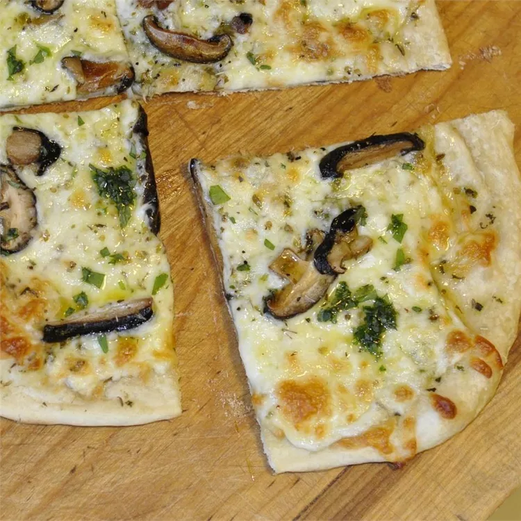

White Pizza with Porcinis

Description
This recipe uses dried porcini mushrooms that have been rehydrated in warm water.
If you can find fresh porcinis, also known as cepes and the great bolete,
you should definitely use them! It's an amazing taste.
Ingredients
- 2 ½ pounds bread flour
- 1 ounce salt
- ½ ounce honey
- 2 ½ cups warm water
- 1 (.25 ounce) package active dry yeast
- 3 tablespoons olive oil
- 1 clove garlic, minced
- 8 ounces rehydrated porcini mushrooms
- salt and pepper to taste
- ⅛ cup cornmeal
- 1 cup shredded fontina cheese
- ½ cup grated Parmesan cheese
- 2 tablespoons chopped fresh parsley
Steps
-
Combine the flour, salt, honey and warm water in an electric mixer with a dough hook.
Mix on low for 2 minutes. Add the yeast and let mix for another 6 minutes on medium speed.
Add the oil and let mix for another 2 minutes. The dough should be fairly tough. Portion into 6-ounce balls.
The rounder the balls, the rounder the pizza in the end. Place the balls in a warm place covered with a moist towel, and let double in size.
-
Preheat oven to 450 degrees F (230 degrees C) and place a pizza stone in the oven to preheat with the oven.
Be sure to put the pizza stone in when the oven is cold to help it preheat.
-
Heat the olive oil in a large skillet over medium heat.
Stir in the garlic and saute for 30 seconds.
Then add the mushrooms and saute for about 2 more minutes.
Season with salt and pepper to taste.
-
On a lightly floured surface, pat or roll out the pizza dough to about a 1/4 inch thickness.
Place on a wooden plank dusted with cornmeal and brush the crust lightly with olive oil.
Sprinkle the Fontina and Parmesan cheeses over the crust, followed by the sauteed mushrooms.
Carefully transfer the pizza to the pizza stone.
-
Bake at 450 degrees F (230 degrees C) for about 10 to 15 minutes, or until crust is golden brown and cheese is melted and bubbly.
Garnish with the parsley.